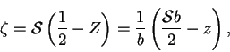
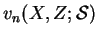
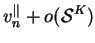
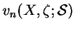
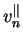
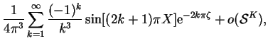
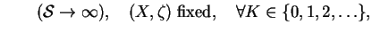
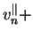
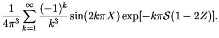

The procedure for large  is similar. The solution of (7.20)
as
is similar. The solution of (7.20)
as
 is (7.24) but not uniformly in space.
The neglected boundary conditions are at the end-walls. Near the front
end-wall, a coordinate,
is (7.24) but not uniformly in space.
The neglected boundary conditions are at the end-walls. Near the front
end-wall, a coordinate,  , stretched by the factor suggested by
Saint-Venant's principle, is introduced:
, stretched by the factor suggested by
Saint-Venant's principle, is introduced:
|  | (7.55) |
The outer expansion is:
|  |  | (7.56) | |
The inner expansion valid near the front end-wall,  , is:
, is:
|  |  | (7.57) | |
|  | |||
|  |
|  | (7.58) | ||
|  |
This is now a full solution that is practical for large  in the
vicinity of the front end-wall. A solution useful near the back
end-wall is easily constructed by exploiting the even symmetry of
in the
vicinity of the front end-wall. A solution useful near the back
end-wall is easily constructed by exploiting the even symmetry of  with respect to
with respect to  . The first term of (7.59) is the
Jones-Furry solution, the second gives the effect of the front end-wall
and the third the effect of the back end-wall. In the earlier
representation for
. The first term of (7.59) is the
Jones-Furry solution, the second gives the effect of the front end-wall
and the third the effect of the back end-wall. In the earlier
representation for  using the Jones-Furry solution as a particular
integral (7.25), the effects of the two end-walls are
entangled, whereas in (7.59), they are separated.
using the Jones-Furry solution as a particular
integral (7.25), the effects of the two end-walls are
entangled, whereas in (7.59), they are separated.
This representation (7.59) of  , arrived at by physical
reasoning, is identical to that suggested in §7.3.4 on
purely numerical grounds.
, arrived at by physical
reasoning, is identical to that suggested in §7.3.4 on
purely numerical grounds.